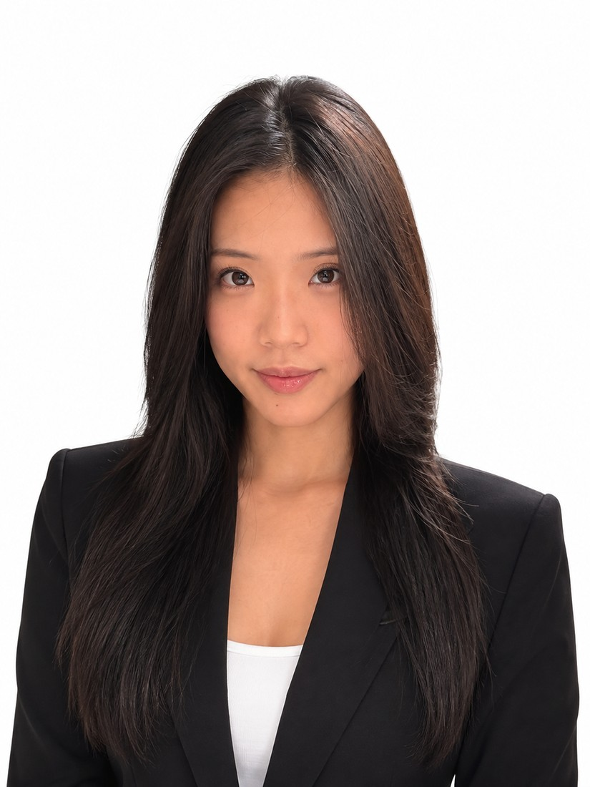
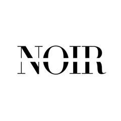
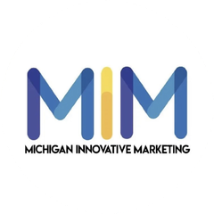
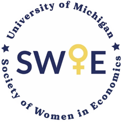
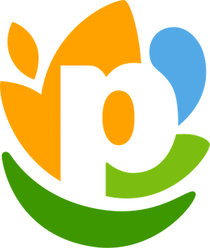
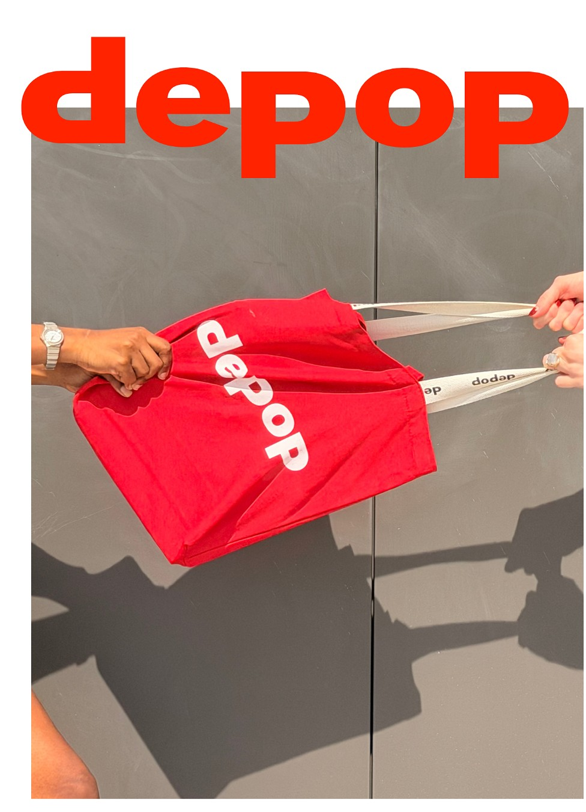

Ahnes Kim
I’m a fourth-year Economics student at the University of Michigan with a passion for strategy, branding, marketing, and creative development. My work sits at the intersection of analytical thinking and visual storytelling, combining data-driven decision-making with strong creative execution.
Through my involvement with Noir Fashion and Runway, I’ve developed experience in content creation, branding, project coordination, and marketing strategy. I’m constantly looking for opportunities to build meaningful experiences, solve complex problems, and create work that delivers measurable impact.
Currently, I’m seeking opportunities in strategy, marketing, branding, product development, and project management.
Secret clearance, U.S. Department of Defense
Languages: Bilingual, Korean and English
Related Skills: Microsoft Office, Google Workspace, Excel, SQL (Oracle), Python / R, Resilinc, Keychain, Adobe Photoshop, Canva
University of Michigan Ann Arbor
LSA, BA in Economics
2023 – 2027, expected graduation May 2027
School Involvement

Marketing & Media Director, NoiR Runway
September 2024 – present
Directs branding, communications and audience engagement. Grew monthly views from about 500 to 150,000+ and led 20+ marketing initiatives for shows, fundraising and community events.

Michigan Innovative Marketing (MIM)
Michigan Business Women (MBW)

Society of Women in Economics (SWIE)
Professional Projects

PepsiCo: Fresh Dips Supplier LandscapingGlobal Procurement Intern, June – August 2026
Supported PepsiCo’s emerging fresh dips category by identifying and assessing potential manufacturing partners. Built a supplier landscape framework, researched suppliers, led outreach and introduced PepsiCo to prospective partners.
- Evaluated 120+ suppliers across 10 qualification categories
- Reached out to 150+ manufacturers; facilitated 30+ supplier meetings
- Secured 20+ NDAs for potential future partnerships
- Worked with Procurement, R&D and Operations stakeholders
Project Overview: Fresh Dips Supplier Landscaping
Northrop Grumman: Equipment Quality Readiness (EQR)
Projects and Facilities Management Intern, May – November 2025
Designed and implemented the EQR framework to assess equipment health and funding needs across manufacturing operations, using Oracle SQL and engineering data to guide capital allocation.
- 150+ manufacturing tools evaluated and prioritized
- $10M+ in annual capital allocation decisions supported
- Estimated 43% increase in operational efficiency
- Estimated 56% reduction in budget misallocation
Project Overview: Equipment Quality Readiness (EQR)
Creative Projects
NoiR Runway
A student-run fashion and philanthropy organization combining creative expression with community impact.
View NoiR Project GalleryMONIE
Founder & Creative Director, June 2024 – May 2025
Founded an independent cut-and-sew apparel brand. Led brand identity, product development, global sourcing and manufacturing partnerships, and go-to-market strategy.
CV
BA Economics, University of Michigan Ann Arbor
LSA. Expected graduation May 2027.
Global Procurement Intern, PepsiCo
Built a global supplier landscape for Fresh Dips and a centralized supplier database; supported sourcing strategy, RFPs and executive supplier engagement.
Projects and Facilities Management Intern, Northrop Grumman
Built SQL-based tools to evaluate manufacturing asset use and inform capital allocation; improved the EQR tracking process.
Founder & Creative Director, MONIE
Launched and ran an independent cut-and-sew apparel brand, from concept to production.
Social Media Marketing Manager, Y2K Baby
Led digital campaigns that contributed to $8K in quarterly revenue growth; ran market research and shaped brand positioning.
Memo
I was inspired to work in creative fields during my time in college. Having a longstanding passion in artistic mediums, I appreciate a unique balance of colors, typography, visual weight, and the overall composition and alignment of everything from the built environment to visual culture. My goal in my career is to establish myself in a position where I can apply my appreciation of the intersection of art, design, and daily life with my personal professional strengths.
My experience in Pepsico and Northrop Grumman provides a diverse selection of learned skills and opportunities to observe different corporate environments and resulting dynamics. At Northrop, I was able to observe capital allocation and facility management at a precision driven-facility. While each industry requires different methods of maintenance with unique criterias, I believe that the fundamentals of what I learned through data analysis and efficient budget allocation prioritization can be applied across a wide range of fields. At Pepsico I was able to further develop my skill level in Microsoft applications as well as integrate myself with newer AI tools now being more commonly integrated into the corporate setting.
As AI grows in commonality in professional settings, I also devoted time towards AI applications. I was able to use AI in data analysis, research, and as an organizational tool during my program. I was also able to execute NDAs with supplier companies by directly speaking with, often times, c-suite executives. I was able to further enhance my communication skills by learning to communicate with confidence and precision, advocate for my ideas, and navigate conversations with professionalism, tact, and discretion.
Moving forward in my career, I hope to combine my experience in both creative and strategic roles and contribute to large-scale projects. I have a strong belief in my ability to grow professionally while continuing to develop my creative skill set. I plan to take advantage of opportunities that encourage the incorporation of new perspectives while maintaining a results-driven mindset. Through this, I hope to contribute to projects that create lasting value and meaningful impact.
NoiR Runway
NoiR Runway is a student-run fashion and philanthropy organization dedicated to combining creative expression with community impact. The organization produces large-scale runway shows, fundraising campaigns, and fashion-centered events that raise awareness and support charitable initiatives while fostering collaboration among students interested in fashion, marketing, design, and business.
Please click on each image to learn more!
www.noirrunway.com
Check out Noir on Instagram for the latest updates.
NoiR Runway - Marketing Director 2026/27
NoiR Runway - Marketing Director 2025/26
Depop x NoiR Student Org Collaboration
As Marketing & Media Director at Noir, I oversee creative direction for photoshoot campaigns, runway show promotions, and overall brand image management. I stepped into this role as a college junior and continue to lead marketing initiatives throughout the 2026-2027 academic year. One of my most recent projects was a collaboration between Depop, UofM Circular Fashion, and Noir.
My experience at Noir has allowed me to develop a wide range of creative, marketing, and leadership skills. Driven by a passion for creative storytelling and strong visual branding, I strive to produce work that meets my own high standards while serving as a meaningful representation of the organizations I represent.

The creative process of this project began with the conceptualization and direction of a photoshoot campaign featuring selected Noir models in a location that reflected the campaign’s visual identity. Aligning my personal interpretation of Depop’s current aesthetic with the message we aimed to communicate, I then edited the shots I took using Canva and Adobe Photoshop to further enhance visual appeal. Wanting to create a student-focused and approachable campaign for the UofM Circular Fashion event, I carefully considered model selection, location, styling, and concept development to ensure the final imagery felt cohesive, engaging, and representative of a diverse audience.
I strongly believe that successful brands maintain a clear visual identity that audiences can instantly recognize and connect with. With this collaboration, my goal was to reinforce one of Noir’s goals as a modeling organization to offer students editorial and creative opportunities while creating mutual value for all collaborators through a campaign that captured the familiarity of everyday fashion brands. By balancing accessibility with a refined and cohesive aesthetic, the final campaign reached an audience of about 7,000 students across five countries.
Please click on each image to learn more!